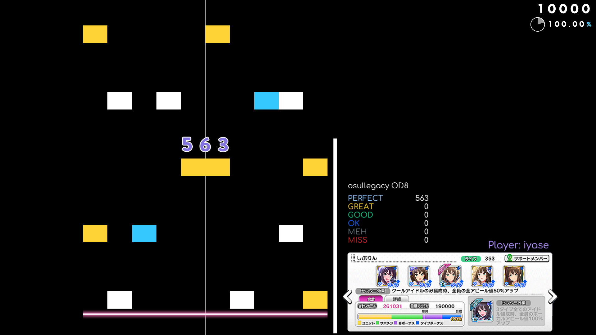
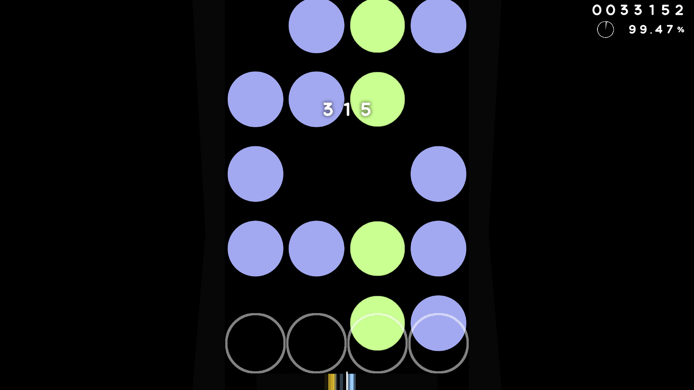

Noesis
Homepage
Noesis is a free and open source vertical scrolling rhythm game, a
distribution of "soundsphere", with the new UI, a lot of new
features to make people from other rhythm games feel comfortable
without having to transition or get used to the new things.
You can play 4K, 7K, 10K, any key mode, BMS, o2jam,
Stepmania/Etterna and
osu!
chart in Noesis.
We spend a lot of time and love for each key mode.


The game has no focus on one individual key
mode,
instead, it has a lot
of unique and useful features for every key
mode.
Here is a short list of interesting features:
You can use different difficulty
calculators: osu! star
rate, MSD, ENPS or custom ones.
Support for osu! skins and osu! scroll
speed. The speed is
1:1 to osu!, you will have no
difficulties with playing
both games, the switch is seamless.
Several score systems to choose: osu!mania,
osu!lazer (score
V2), Quaver, Etterna, LR2. As well the
accurate miss and
hit windows and support for hit logic
like in Etterna
and
osu!lazer.
A lot of chart parsers. You can play charts
from osu!,
Stepmania/Etterna, Quaver, Beatmania and
o2jam.
The reason why Noesis exist:
I started developing mods for "soundsphere" in the early 2024.
The
original game already had a lot of features, but I was not happy
about
several things about it. The main reason was the UI - it's not
great.
This led me to create the mod: "Irizz Theme", which is the main
UI for
Noesis.
I created something unique and simple, everything had been
thought out
in advance. The UI has minimal set of information, only
necessary information is being displayed.
Creating mods was fine, but
the constant updates of the base game was keep breaking my mods.
This is
why I decided to create Noesis, a stable distribution of
"soundsphere",
with all my mods, all my skins and no auto updates.
Here is a look at the song select.
It was designed to be so minimal, and surprisingly,
you
have enough information to play 4K, 7K and
basically any
other
key mode.
A lot of information is in the easily accessible
in
other screens. There are also a lot of buttons
hidden
for
mouse users. The theme is fully usable with the
mouse.
We have many settings.
Try to find something
interesting in there, especially in the UI tab!
It may look like a lot of information is
displayed on
the results screen, but most of the information
is
displayed on the left panel.
You have enough
information here to share your scores with
others.
For those, who like simplicity of osu!, you can
use
your favorite osu! skin to display it's result
screen.
Want to try the game?
Follow the instructions on the
download page.
The documentation should be easy to understand, without much
effort you
will be able to make the game use your osu! songs directory, or
any
other directory with charts, without copying all the charts.
You will also learn how to add skins to the game.
Fresh Install Instruction
-
-
Download the "noesis_client.zip"
file.
-
Unzip this file to the desired
directory.
-
Launch the game using the
"game-win64.bat" file on
Windows, or the "game-linux"
file on Linux.
-
Follow the begginer's guide
to learn how to add songs and skins.
Updating the game
You can continue using your previously installed
game if you're
happy with your version. Updates are optional.
-
-
Download the "game.love" file.
-
Replace the old "game.love" file in
the root of your
game with the newly downloaded
file.
Join our discord
server to
stay updated on new features and announcements
from the
developers!
Adding charts
There are three ways to add songs to the game. If you are coming
from the other rhythm games, stick with the first one.
First method: Mounting chart directories from other rhythm games.
Using this method, you can make Noesis read the charts from other
directories, without copying them into the Noesis charts
directory.
First of all, you should find charts directory you want to mount.
-
You can find osu! charts by right clicking on
the
osu! shortcut on your desktop and pressing "Open
file location".
"Songs" directory
contains all
your charts.
-
You can find Etterna/Stepmania charts the exact
same way as finding osu! charts.
-
To find Quaver charts, open Steam, find Quaver in
your
games library, right click on it and select:
Manage, Browse local files.
"Songs" directory is the one you are looking
for.
Adding songs:
Once you have located the charts directory, open Noesis and follow
the steps
shown in the images below.
-
Go to collections
-
Click on the Mounts button
-
Click on the Create button.
-
Drop charts directory into the game window.
-
Click on the Update button.
The game will cache all the charts that are in the directory. The
game can also recursively find charts, there will be no problems
adding Etterna/Stepmania charts, as the charts in these games
are stored in
the packs.
Second method: Adding charts manually.
Open the directory where Noesis is installed. Open the
`userdata/charts` directory.
Create a new directory with any name, it will be a collection of
charts. Copy your charts in there.
Next step: In the game, switch to collections screen, click
on the Mounts button, select "soundsphere" location and click on
the Update button.
Third method: Downloading charts using built-in osu!direct.
Go to collections screen, click on the "osu!direct" button. Find
some cool charts and press Download. The download rate is
limited.
Next step: open Mounts menu, select "soundsphere" location and click
on the Update button.
What next?
You already can play the game. The game has several skins
preinstalled, you can select them in the settings in the
gameplay
tab.
If you want to add your osu! skin or .lua skin, follow the
instructions on this
page
Getting the skins
The game supports loading osu! skins by simply placing one in the
skins directory. The game also has its own skin format with more
customization and capabilities, as .lua skins have direct access
to the game code.
-
You can find osu! skins on this
website.
-
You can find .lua skins on our
discord
server.
DO NOT DOWNLOAD .lua SKINS FROM SUSPICIOUS
PEOPLE, AS
THE .lua
SKINS MAY EXECUTE CODE THAT CAN HARM YOUR SYSTEM
AND
NETWORK.
Always check the code before installing the
skin.
Installing
osu! skins is safe.
Adding skins
Open the directory where your game installed. Open this path:
`userdata/skins/`. Place your osu! or .lua skin there.
The path for the osu! skin
should look like this: `userdata/skins/random_osu_skin/skin.ini`
The path for the .lua skins should look like this:
`userdata/skins/random_skin/4key.skin.lua`
Selecting the skin
Restart the game. Select the skin in the settings, at the bottom of
Gameplay tab.
Alternatively, you can select skins by pressing CTRL + S.